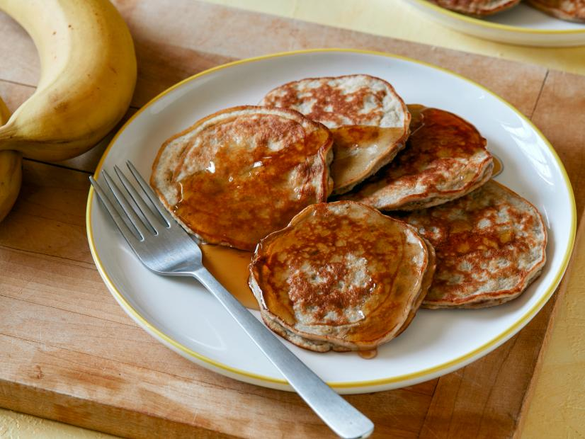

Protein Banana Pancakes

Recipe Description
This easy recipe for banana pancakes with some extra protein was found on the
Food Network website. The recipe is courtesy of Kayla Hoang. This recipe will
yield about eight 3-inch pancakes. The time required to make these will be
about 15 minutes.
Ingredients
- 1 large banana
- 2 tablespoons of whey protein
- 1/2 teaspoon pure vanilla extract
- 1/4 teaspoon baking powder
- 1/4 teaspoon kosher salt
- 1 large egg
- 1 egg white
- Coconut oil
- Maple syrup (for serving)
Steps
- Mash the large banana.
- Whisk mashed banana, whey protein powder, vanilla, baking powder and salt
in a medium bowl until combined.
- Whisk the egg and egghite in a seperate small bowl.
- Whisk the egg mixture together with the banana mixture until combined.
- Heat skillet on medium heat and lightly brush with coconut oil.
- Slowly pour about 2 tablespoons of the batter onto the skillet for each
pancake and cook until edges and bottom is lightly browned and flip and
continue to cook on the other side until golden colored.
- Transfer to a plate and repeat process with remaining batter, adding necessary
coconut oil in between batches.
- Serve along with maple syrup